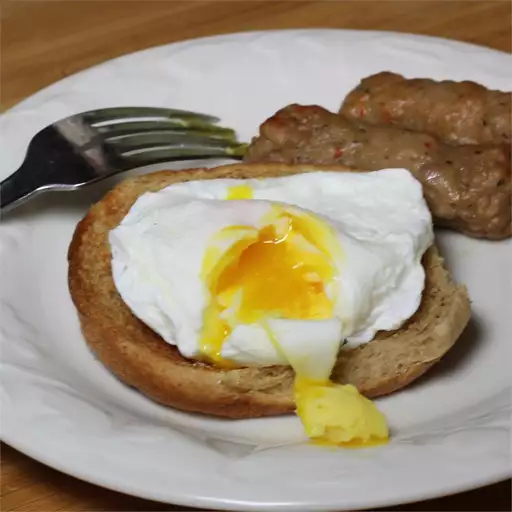

Poached Eggs

| Prep Time |
10 minutes |
| Cook Time |
15 minutes |
| Additional Time |
0 minutes |
| Total Time |
25 minutes |
| Servings |
2 |
Ingredients
- 1 teaspoon champagne vinegar
- ½ teaspoon salt
- 2 eggs, as fresh as possible
Method
- Fill a bowl with ice water./li>
-
Fill a saucepan with cold water and place over medium heat; stir in
vinegar and salt. Bring to a gentle, slow simmer and reduce heat to low.
-
Break each egg into a separate small ramekin; place a ramekin close to
the surface of the water and gently pour egg into the simmering water.
Let egg white set for a minute or two and use a silicone spatula to
gently lift egg from the bottom of the pan to prevent sticking. Cook
until white is firm and yolk is runny, about 6 minutes.
-
Lift poached egg from water using a slotted spoon and transfer gently to
bowl of ice water to stop the cooking process. Reheat eggs for 1 1/2 to
2 minutes in very gently simmering water and remove with a slotted
spoon. Tap bottom of slotted spoon containing egg on a dry paper towel
to remove any excess water before serving.
- Continue cooking until brown on both sides.
Home